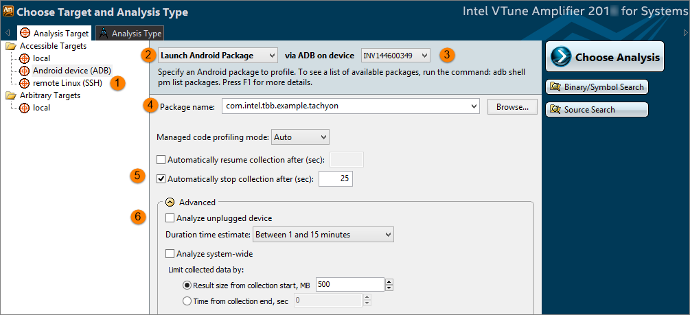

Follow these steps before analyzing your sample
tachyon application target for hotspots.
Follow these steps before analyzing your sample
tachyon application target for hotspots.
Get Software Tools
If you do not have them already, get and install these software tools:
Android* SDK and NDK
Intel® VTune™ Amplifier for Systems
Eclipse* or other development environment (optional)
or
Apache Ant* (to compile outside of Eclipse or other development environment)
Optionally, update your PATH environment variable to include the location of the Android SDK platform-tools, tools, and ndk directories and the location of your Apache Ant bin directory, if applicable.
Note
The following steps use Eclipse Mars.1 Release (4.5.1) and Apache Ant 1.9.6. Other development environments may require alternate steps.
Build the Application
Extract the /opt/intel/vtune_amplifier_<version>_for_systems/samples/en/C++/tachyon_vtune_amp_xe.tar.gz file to a writeable location on your host system. This file contains the tachyon\android directory, which includes the sample application source files used in this tutorial.
Specify the location of your Android NDK and SDK directories.
Navigate to the tachyon\android directory and open the local.properties file with a text editor.
Add the location of your Android SDK and Android NDK directories. For example:
sdk.dir=/home/uid/Android/Sdk ndk.dir=/opt/android/android-ndk-r10e
Save and close the file.
Compile the C++ code and create the binaries.
Open a command prompt and navigate to the tachyon\android directory.
Run the following command: ndk-build
Build the application .apk file.
Using Eclipse:
Open the Tachyon project as an Android Project from Existing Code in Eclipse.
Click Run.
Select your Android device from the Choose a running Android device list and click OK.
The Tachyon.apk file is built in the tachyon\android\bin directory and installed on the device.
Exit Eclipse.
Using a command prompt and Apache Ant:
Run the following command from the tachyon\android directory: ant clean
Run the following command to create the .apk file in the tachyon\android\bin directory: ant debug
Install the Tachyon-debug.apk file on the Android device using the following adb command:
adb install bin\Tachyon-debug.apk
You can confirm that the package has installed by either running Tachyon sample on the device, or by listing out the installed packages:adb shell pm list packages | grep tachyon
Create a Project
From the <install_dir>/bin32 directory (for IA-32 architecture) or from the <install_dir>/bin64 directory (for Intel 64 architecture), run the amplxe-gui script to launch the VTune Amplifier GUI.
Note
For the VTune Amplifier for Systems, the default <install_dir> is :- For super-users: /opt/intel/system_studio_version/vtune_amplifier_for_systems
- For ordinary users: $HOME/intel/system_studio_version/vtune_amplifier_for_systems
Create a new project via New > Project... or using the new project action from the toolbar. The Create a Project dialog box opens.
Specify a project name such as tachyon that will be used as the project directory name. Click Create Project.
VTune Amplifier creates the tachyon project directory under the $HOME/projects/ directory or the location you specified and opens the New Amplifier Result page with the Analysis Target tab active.
In the Analysis Target tab, specify your target as follows:

Target system: Accessible Targets > Android device (ADB)

Target type: Launch Android Package

Via ADB on device: Select device from drop-down list. In the example, the Android device is identified as INV144600349.

Package name: Either click Browse and select the package named com.intel.tbb.example.tachyon from the list, or enter it directly as the Package Name.

Select Automatically stop collection after (sec) to a value in seconds. The sample shows 25. You can also choose to click Stop after a single iteration of the tachyon application. You will see a 3-D fractal image appear, blank out, and start to reappear again.

[Optional] Select Analyze unplugged device to run the analysis while the device is disconnected from the host system. Data collection begins when the device is disconnected and the results are finalized and displayed in VTune Amplifier after the device is connected again.
Click the Binary/Symbol Search button, add the directories listed below for the binary with symbols to the search paths, and click OK.
The symbols are created when Android applications are built, but are stripped off before you place the package on the device.
Note
Use the x86 directory when running on a 32-bit Android device and the x86_64 directory when running on a 64-bit Android device.
Add the following directories to see the relevant symbol information:
\tachyon\android\obj\local\<x86 or x86_64>
\tachyon\android\obj\local\<x86 or x86_64>\objs-debug\abi\jni
\tachyon\android\obj\local\<x86 or x86_64>\objs-debug\jni-engine\jni
\tachyon\android\obj\local\<x86 or x86_64>\objs-debug\jni-engine\src\tachyon_src
\tachyon\android\obj\local\<x86 or x86_64>\objs-debug\jni-engine\src\tbb\common\gui
Note
Only the symbol information for functions called by the tachyon sample application are included in this list. As a result, any functions called by operations other than those in the tachyon sample, including functions called by the Android operating system, will not be mapped in VTune Amplifier. These functions will appear as funct@<value> rather than with the function name and the call stack information will not be available.
Click the Source Search button, add the directory for the binary with symbols to the search paths, and click OK.
Add the following directories to see the relevant search information:
\tachyon\android\src\tachyon_src
\tachyon\android\src\tachyon_src\gui
\tachyon\android\src\tachyon_src\tbb\common\gui
\tachyon\android\src\tachyon_src\tbb\src
\tachyon\android\src\tbb\common\gui
Note
Only the source information for functions called by the tachyon sample application are included in this list. As a result, any functions called by operations other than those in the tachyon sample, including functions called by the Android operating system, will not be mapped in VTune Amplifier. These functions will appear as funct@<value> rather than with the function name and the call stack information will not be available.
Click Choose Analysis to apply the settings and switch to the Analysis Type tab.